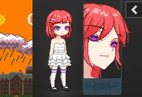
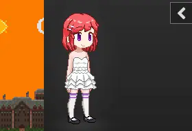

BESC
BEEESSS Community Sprite Compilation
BES 社区补充包，社区美化的集合，基于 BES 并修正了部分 BES 的显示问题

名称中含有 兼容版 的游戏本体意味着针对较旧版本的浏览器内核进行了一定程度的兼容，因此请优先下载名称中不含 兼容版 的游戏文件，如果无法正常运行，再下载名称中含 兼容版 的游戏文件尝试运行。
寿里式美化，替换所有部件的大型综合美化，覆盖较为全面
在立绘旁显示特写头像

已包含 庫褲子BJ美化包髮型擴充，更多预览请前往此仓库查看
另一个特写版本

已包含 kr特写刘海补充5.0
身体美化
